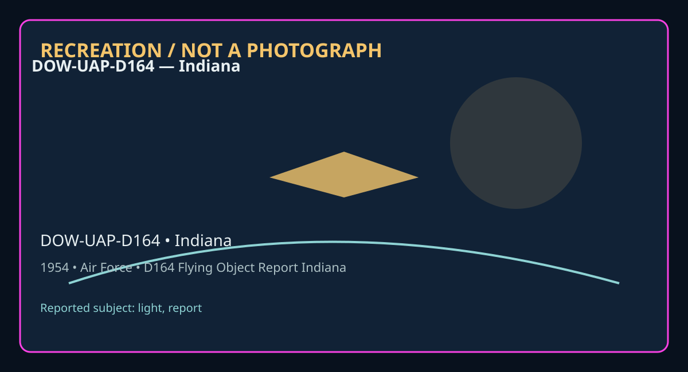

Release 07 / archival case file / DOW-UAP-D164
D164 Flying Object Report Indiana 1954
This d164 flying object report indiana places a light, report thread in a 1954 Indiana record.
ID: DOW-UAP-D164
Filename:
DOW-UAP-D164-Flying_Object_Report_Indiana-1954.pdfDate marker: 1954
Location: Indiana
Agency or collection signal: Air Force
Pages read: 6

RECREATION / NOT A PHOTOGRAPH. The diagram is an interpretive editorial aid, not source imagery.
What this document says
The opening page's extracted text begins: “--- Authority: NND57597 HEADQUP. RT E RS 2466th AIR FORCE-RESERVE COMBAT TRAINING CENTER (CONACl_ Atterbury Air Force Base • Columbus, Indiana RIO 13 JAN 1954_ SUBJECT : UFOB AF607182 TO : Director of' Intelligence Headquarter s, United States Air Force t-Jashington 25, D. c. l. In lieu of AF Form 112b as required by AFR 200-2, 26 August 1953, the following inf'ormation is submitted to conf'orm to paragraph 6b of cited regulation : a . Description of the objects : (1) Shape : Circular ring of smoke; cloudy substance that stayed in a plane. No upper or lower structure could be seen. (2) Size : Observer would not estimate size with the exception of' using the word, "large". No relati ve comparison. (3) Color : White, cloudy, gase·ous .. (4) Number: Two (5) Formation: Staggered like two jets in flight, tightly following each other. (6) Discernable features or details: Four bright or brilliant equidistant points of light 'Within the same plll]le, rotat ing slowly clockwise and seeming to be the source of cloudy aura, white in color. (7) Tail, trail or exhaust: Compared favorably with Jet take off when observed at night. Bluish vhite with vaporish trail. (8) Sound : None to the ear, although observer s stood outside of car to make sure. (9) Other pertinent or unusual features : Controlled downward ti lt f'rom direction of approach to hovering point. Com plete level stability whil”
Across the 6 pages, the recurring terms are light, report. Those details belong to this file, not to a generic case template. Page-level reading follows:
- Page 1: --- Authority: NND57597 HEADQUP. RT E RS 2466th AIR FORCE-RESERVE COMBAT TRAINING CENTER (CONACl_ Atterbury Air Force Base • Columbus, Indiana RIO 13 JAN 1954_ SUBJECT : UFOB AF607182 TO : Director of' Intelligence Headquarter s, United States Air Force t-Jashington 25, D. c. l. In lieu of AF Form 112b as required by AFR 200-2, 26 August 1953, the following
- Page 2:
- Page 3: Hq 2466th AFRCTC, Atterbury AFB, Columbus, Indiana., RIO, Subj : ti'OB b. Description of course of objects: • (1) Attention: Observers attracted by brilliant moving light. • (2) Angle of flight: Observers were in moving car and travelling East. Looked North at approximately 20° elevation. (3) Angle of flight on disappeiu-ance: Undetermined by observers; spok
- Page 4: Hq 2466th AFRCTC, Atterbury AFB, Columbus, Ind. , RIO, Subj: UFOB g. Weather/wind conditions: (1) Period covers the week of 8 December to 15 December 195.3. (a) Dec 8 - 10: Overcast 10 - 12: Cle.<ir between 1800 to 2400, otherwise overcast. ll - 12: Overcast 1.3 - 15: Overcast Light rain, drixzl e, light snow, fog prevailed interntlttently. (b) Dec 8 - 13: w
- Page 5: Hq 2466th A.."li'RCTC, Atterbury AFB, Columbus, Ind., RIO, Subj: UFOB Comments: Mr Jones was a patient in the Bartholomew County Hospital and under the care of Dr. Fisher. He was to'be released 10 January or 11 January after short con valescence. Mr Jones stated that he had not told anyone of his exper iences other than three personal friends desiring to a
- Page 6:
Historical context and disclosure schema
Read in context, this record belongs to the 1954 information environment: Air Force paperwork, a Indiana setting, and the reporting conventions visible in the source. Its broader disclosure value is procedural as well as anecdotal: it shows how an observation, material question, investigation, or analytical program was routed, described, and preserved. That makes it comparable to other Release 07 records without collapsing unlike evidence into one event.
Evidence limits
The source establishes that this document exists and records what its authors or quoted witnesses wrote. It does not, by itself, prove the identity, performance, origin, or physical reality of the reported subject. Extraction preserves wording but cannot restore missing attachments, authenticate provenance, or independently validate testimony. Interpretations beyond the page-specific record remain hypotheses.
Source: supplied PDF in research/tranche-07. This article is a research aid, not a claim that the reported object was non-human.